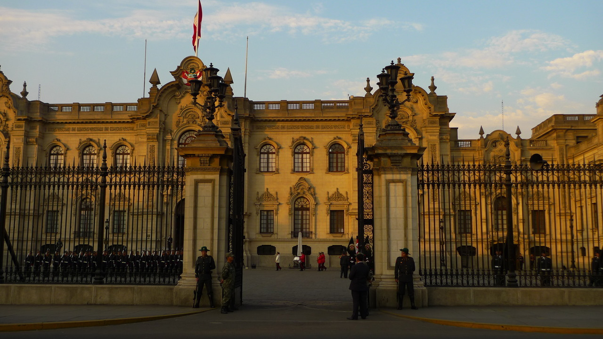
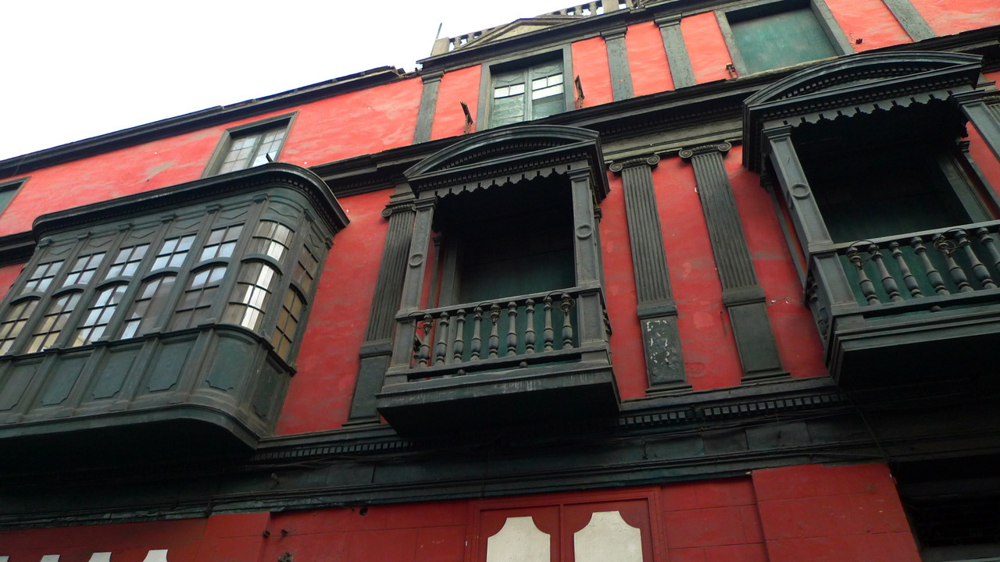
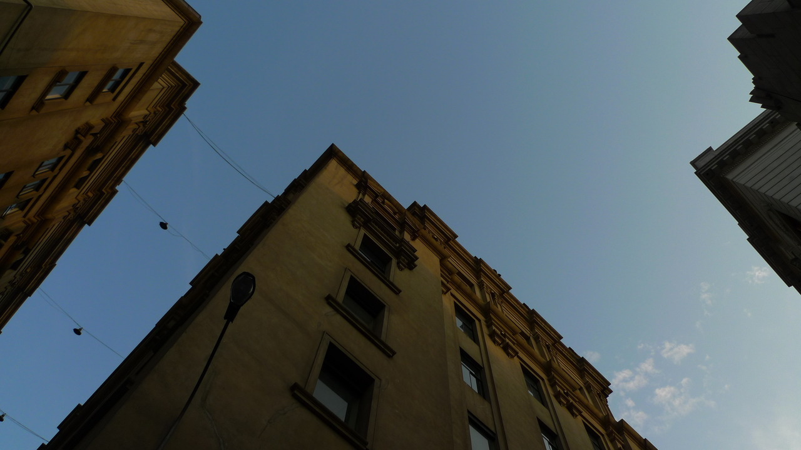
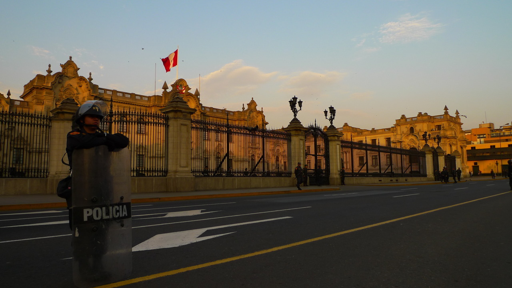
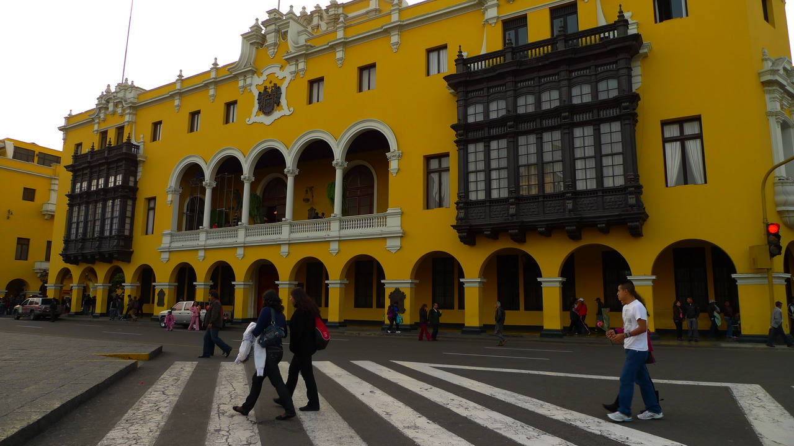
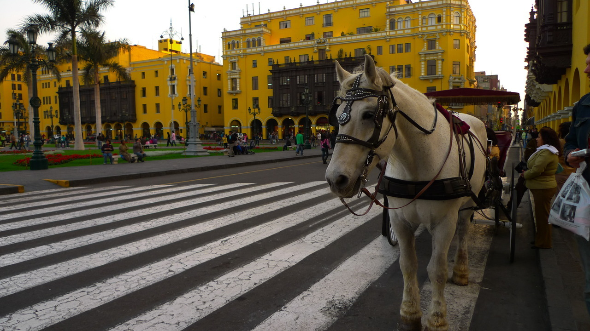

Sun, 31 Oct 2010 13:16:26 · Peru · Lima · Travel · City · Photog · Photography.
assortment of random pix on an afternoon walk in






Assortment of random pix on an afternoon walk in downtown Lima, Peru. I was lucky enough to be at the right time to witness the Presidential Palace guards shift change.